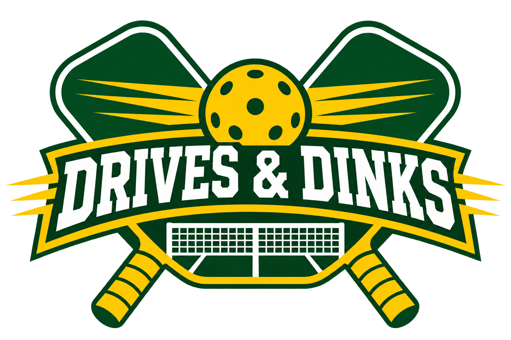

DRIVES & DINKS
POINT COMPLETERALLY REPLAY READY
SHOT
BALL CONTROL
AIM + DEPTH
HOW TO PLAY
Players move automatically. Aim with mouse, touch, or ← →. Choose shot depth with ↑ ↓ or drag vertically on BALL CONTROL. Up is deeper; down is shorter. Hold Shift with arrows for fine control. Press SPACE or choose a shot to hit. Press P or Escape to pause. Aim rally shots and serves with the court or BALL CONTROL pad. Serves keep their automatic depth. ATTACK and SOFT become hard and soft serves.
VISUAL QA